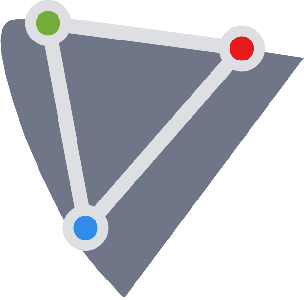
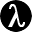

The whole library: 221 spaces, 63 kB gzipped – every space to every other, both ways.
npm install color-space
import space from 'color-space' space.rgb.oklch(255, 128, 0) // → [0.732, 0.186, 53] space.oklch.rgb(0.65, 0.1, 180) // → [56.14, 162.97, 145.41] space.oklch.range // [[0,1], [0,0.4], [0,360]]
Or one space alone – the bundle carries nothing else.
import oklch from 'color-space/oklch.js' oklch.rgb(0.65, 0.1, 180) // → [56.14, 162.97, 145.41]
Typed: TypeScript declarations ship in the package, for the whole library and for each space alone.
For whole images and long buffers: 54 spaces, 52 kB gzipped, 1.4–4.8× faster than the JS batch on the 26 conversions measured.
import space, { alloc } from 'color-space/wasm'
space.oklch.rgb(0.72, 0.16, 41) // → [246, 125, 79]
const buf = alloc(n) // n×3 Float64Array
space.rgb.oklch(buf) // in place
The module imports nothing, so it runs wherever WebAssembly does: browsers, Node, Deno, Bun – and Python, Rust or Go through wasmtime or wasmer.
import struct
from wasmtime import Store, Module, Instance # pip install wasmtime
store = Store() # color-space.wasm: the npm package's dist/
cs = Instance(store, Module.from_file(store.engine, 'color-space.wasm'), []).exports(store)
at = cs['alloc'](store, 1.0) & 0xFFFFFFFF # the buffer: n×3 float64 in the kernel's memory
cs['memory'].write(store, struct.pack('3d', 255, 128, 0), at)
cs['rgb_lrgb_n'](store, 1.0) # in place, edge by edge: rgb → linear rgb → oklab
cs['lrgb_oklab_n'](store, 1.0)
struct.unpack('3d', cs['memory'].read(store, at, at + 24)) # (0.732, 0.112, 0.148)
Spaces rgb, lrgb, xyz, xyz-d50, xyy, lms, p3, p3-linear, rec2020, rec2020-linear, a98rgb, a98rgb-linear, prophoto, prophoto-linear, rec709, hsl, hsv, hwb, oklab, oklrab, oklch, oklrch, lab, lchab, lab-d65, lch-d65, din99o-lab, din99o-lch, luv, lchuv, hsluv, hpluv, cam16, hct, ycbcr-bt709, ycbcr-bt2020, jzazbz, jzczhz, ictcp, ictcp-hlg, ipt, din99d, acescg, acescct, acescc, awg3, logc3, logc4, slog3, vlog, log3g10, clog2, ryb, munsell
All 221 spaces as shader functions. A conversion to rgb returns 0–255, as in JavaScript: divide by 255 for a fragment color.
WebGL and OpenGL: GLSL.
import { glsl } from 'color-space/gl'
import oklch from 'color-space/gl/oklch'
const frag = `#version 300 es
precision highp float;
${glsl(oklch, 'rgb')}
out vec4 color;
void main() { color = vec4(oklch_rgb(vec3(0.7, 0.15, gl_FragCoord.x)) / 255.0, 1.0); }`
WebGPU: WGSL.
import { wgsl } from 'color-space/gl'
const code = wgsl(oklch, 'rgb') + `
@fragment fn main(@builtin(position) p: vec4f) -> @location(0) vec4f {
return vec4f(oklch_rgb(vec3f(0.7, 0.15, p.x)) / 255.0, 1.0);
}`
DirectX, Unity and Unreal: HLSL. Metal: MSL. Both written from the WGSL by naga, an optional dependency.
import { hlsl } from 'color-space/gl/hlsl' // npm i naga-wasm
import { msl } from 'color-space/gl/msl'
await hlsl('oklch', 'rgb') // float3 oklch_rgb(float3)
await msl('oklch', 'rgb') // metal::float3 oklch_rgb(metal::float3)Convert footage in your editor: pick two spaces and download a .cube for Resolve, Premiere, Final Cut, OBS or ffmpeg. Camera-log conversions match the Academy’s official ACES transforms.
Bring a space into Photoshop, your system’s color management, lcms or ImageMagick: download it as an .icc profile. RGB spaces work as Photoshop working spaces; the others convert through a lookup table.
For AI agents: they call verified conversions instead of guessing them.
npx -y color-space mcp
// Claude Code
claude mcp add color-space -- npx -y color-space mcp
// VS Code
code --add-mcp '{"name":"color-space","command":"npx","args":["-y","color-space","mcp"]}'
// Claude Desktop · Cursor · .mcp.json
{ "mcpServers": { "color-space": { "command": "npx", "args": ["-y", "color-space", "mcp"] } } }The selection's fills and strokes in any of the 221 spaces – a plane and a bar per channel, cut to the file's gamut; copy the color as CSS.
Every color in the file – CSS, Swift, Flutter, Compose, Unity, design tokens – in any of the 221 spaces, a plane and a bar per channel; an edit is written back in the color's own notation.
A coordinate system for color: axes, ranges, and a rule tying the numbers to measurable light. Human vision is trichromatic, with three types of cone cells (S, M, L), so three coordinates are the minimum to describe any color the eye can see. The same orange is rgb(255 128 0), oklch(0.732 0.186 53) and XYZ [49, 36.7, 4.5]. A palette is a handful of chosen colors; a space is a way to write down any color at all.
A color model is a shape for the numbers: RGB says three primaries, HSL says hue, saturation and lightness, CMYK says four inks. A color space ties a model to measurable light – which primaries, which white, which curve – so each set of numbers names exactly one color. rgb(255 0 0) is a different red in sRGB, Display P3 and Adobe RGB: one model, three spaces.
Everyday usage calls both spaces – so does CSS's color-mix(in hsl, …), and so does this catalog. A model without an anchor of its own borrows one: HSL and HSV here reshape sRGB, as in CSS.
It depends on the task:
To see every space sorted by task, group the catalog by purpose.
OKLCH. It keeps the same three controls – hue, chroma, lightness – but its lightness is trustworthy: in HSL, yellow at L=50 emits about 13 times the light of blue at L=50, so equal L doesn't mean equal brightness. In OKLCH it does. CSS supports oklch() natively.
Type or paste it into the color field at the top, say #ff8000. Every space on the page shows that color at once; in OKLCH it reads 0.732, 0.186, 53, which CSS writes as oklch(0.732 0.186 53). Each dossier's css tab gives the copyable form, and in code it's space.rgb.oklch(255, 128, 0).
Because they're computed in gamma-encoded sRGB, where averaging two colors' numbers produces darker, duller light than actually mixing their light would. Interpolating in OKLab avoids this; in CSS that's linear-gradient(in oklab, red, blue). Every dossier's interpolate row draws the same blend through two spaces side by side, so you can see the difference before choosing.
Open your camera's log space, such as S-Log3, LogC4 or Apple Log. In its conversion LUT block, choose Rec. 709 and your editor: DaVinci Resolve, Premiere Pro, Final Cut Pro, OBS, ffmpeg and others. Your browser writes the .cube file. It is a technical conversion with no tone mapping: highlights above diffuse white clip, and the look is yours to add.
A color one space can describe but another – or your screen – can't show. A vivid Display P3 green doesn't exist in sRGB: convert it, and the numbers fall outside the valid range. The atlas keeps this visible: a ⚠ by the current color marks it outside the Limit you pick, Alt held over a plane or strip says which wider gamut a color there needs (P3, Rec. 2020), and out-of-range stretches ghost over a checkerboard.
A screen emits light; paper reflects what its inks don't absorb. Ink on paper reaches fewer vivid colors – saturated RGB blues, greens and reds fall outside it – so they print duller. Prepress converts through an ICC profile made for the press and paper, such as FOGRA39 for European coated stock or GRACoL in the US. This catalog's CMYK is the plain formula CSS uses for device-cmyk() without a profile – right for the numbers, not a proof of the print.
For the web and for sharing, sRGB: browsers and phones assume it when a file carries no profile. Display P3 keeps more of a vivid scene on Apple and many Android screens, as long as the profile stays embedded. Send Adobe RGB when a print lab asks for it. Keep ProPhoto RGB for 16-bit editing: its gamut is so wide that 8-bit files band.
Conversions are closed formulas, not lookup approximations, and round trips return within floating-point noise. The few exceptions are documented where they occur: OSA-UCS has no closed inverse, and atlas systems like Munsell interpolate between published grades. Output in rgb is never clamped: a color outside sRGB comes back below 0 or past 255, so clamp only when you display it.
They are also checked: every space links the paper or spec it implements, values are tested against colorjs.io wherever the two overlap, and the camera logs against the Academy's official ACES transforms. formula-verification.md records what was checked against what – including a few places where the published papers themselves had errors.
If the numbers differ from another library's, compare ranges: this one keeps each space's conventional ranges – RGB 0–255, Lab lightness 0–100, hue 0–360 – where many flatten everything to 0–1. Every card shows its ranges; in code they're space.oklch.range.
Natively rgb(), hsl(), hwb(), lab(), lch(), oklab(), oklch(), plus color() for Display P3, Adobe RGB, ProPhoto, linear sRGB and XYZ (D65 and D50). CSS's rec2020 is a pure 2.4 gamma, not the BT.2020 curve of this catalog's Rec. 2020 – the same numbers would name a different color. Each dossier's css tab writes the current color in copyable form; spaces CSS lacks ship as ICC profiles or LUTs instead.
Open View and pick a Vision: red-blind (protanopia), green-blind (deuteranopia) or blue-blind (tritanopia). The catalog redraws as that eye sees it, so you can check that the colors of a palette stay apart. About 1 in 12 men have a color vision deficiency, by the NEI's count.
Those are licensed products: their colors are defined by data the owners sell, not by published formulas – so there's no open math to implement, and redistributing their tables wouldn't be legal. Close relatives whose math is public are here: Munsell (its 1943 renotation is public record) and RAL Design (defined directly in CIELAB). Any system whose math was ever published belongs here; suggest one that's missing.
| Tool | Spaces | Camera logs | Luma–chroma | sRGB | Toolkit | Size | Speed | Targets |
|---|---|---|---|---|---|---|---|---|
| color-space | 205 | 31 | 16 | 0–255 | parse mix ΔE contrast CVD | 62 kB | JS, WASM, GL, LUT, ICC, OCIO, MCP, Figma, VS Code, CLI, web | |
| culori | 30 | – | 1 | 0–1 | parse mix gamut ΔE contrast CVD | 23 kB | JS | |
 colorjs.io | 51 | – | – | 0–1 | parse mix gamut ΔE contrast | 34 kB | JS, web | |
| chroma-js | 11 | – | – | 0–255 | parse mix ΔE contrast palettes | 17 kB | JS | |
| @texel/color | 16 | – | – | 0–1 | parse gamut ΔE | 9 kB | JS | |
| colour-science | 128 | 24 | 6 | 0–1 | ΔE CVD | – | – | Python, LUT |
| ColorAide | 77 | – | – | 0–1 | parse mix gamut ΔE contrast CVD palettes | – | – | Python |
| colorspace (R) | 9 | – | – | 0–1 | mix contrast CVD palettes | – | – | R, web |
| OpenColorIO | 57 | 11 | – | 0–1 | gamut | – | – | C++, Python, GL, LUT, ICC |
 Bruce Lindbloom | 22 | – | – | 0–1, 0–255 | ΔE | – | – | web |
| oklch.com | 9 | – | – | 0–255 | parse gamut | – | – | web |
From each project's own source, package or page, 2026-10-18.